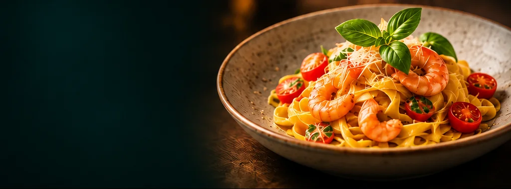
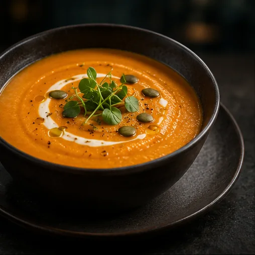
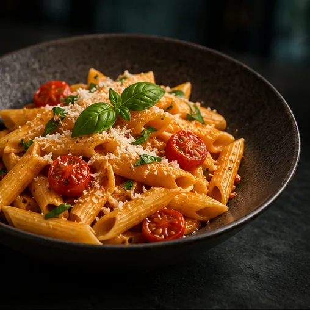
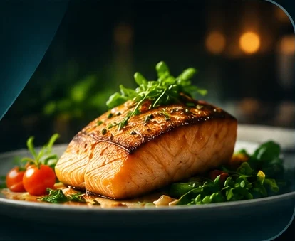
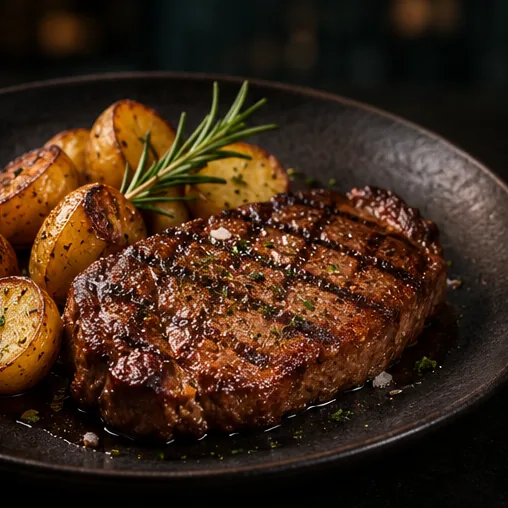
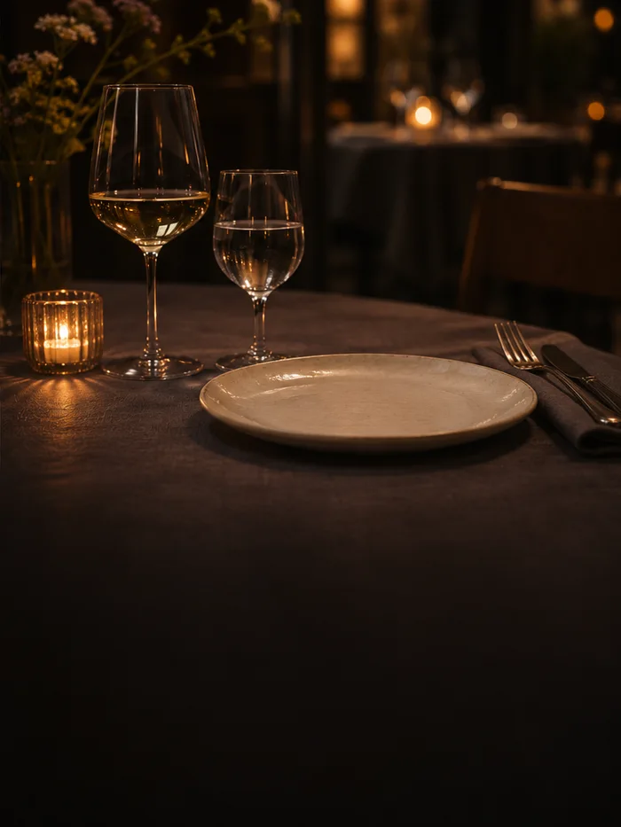
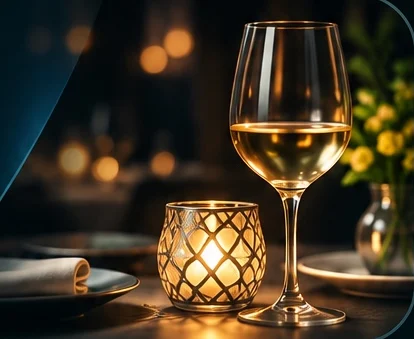

Hambar Bistro
Rafinament relaxatPentru o cină în doi, cu mâncare bună și timp de stat la masă.
Vezi pe hartă →Unde ieșim în Slobozia? Alege locul după atmosfera pe care o cauți.
14 localuri în Slobozia · Imagini ilustrative
Pentru o cină în doi, cu mâncare bună și timp de stat la masă.
Vezi pe hartă →
O cafea care se poate prelungi într-un prânz cu prietenii.
Vezi pe hartă →
Pentru serile în care vrei să mai rămâi la povești după cină.
Vezi pe hartă →
Când ai poftă de gusturi italienești la o masă cu familia sau prietenii.
Vezi pe hartă →
Un cadru aparte pentru o aniversare sau o masă de sărbătoare.
Vezi pe hartă →
Pentru un prânz în familie, într-un cadru clasic și familiar.
Vezi pe hartă →

Pentru un grup cu gusturi diferite sau când ai chef să încerci ceva nou.
Vezi pe hartă →
O pauză de prânz sau o întâlnire spontană, fără formalități.
Vezi pe hartă →
Când vrei o masă consistentă și mâncarea e motivul ieșirii.
Vezi pe hartă →
Pentru un prânz liniștit sau o cină obișnuită, într-un loc familiar.
Vezi pe hartă →
O oprire la masă în mijlocul unei zile pline, singur sau cu familia.
Vezi pe hartă →Când ai chef de ceva diferit și ai puțin timp pentru masă.
Vezi pe hartă →
Pentru o seară în gașcă, cu discuții lungi și atmosferă degajată.
Vezi pe hartă →